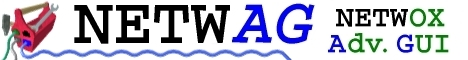

Learning how to use netwag
Learn how to use netwag in
22 lessons.
Miscellaneous text files
Following files are a copy of files included in ".tgz". Please
ignore references to local path (for example
./doc/probleminstallunix.txt).
presentation
installation of netwag-5.39.0-src.tgz
installation of netwag-5.39.0-bin_windows.tgz
problems which might happen during installation of netwag-5.39.0-src.tgz under Unix
problems which might happen during installation of netwag-5.39.0-bin_windows.tgz
problems which might happen during usage under Unix
problems which might happen during usage under Windows
how to report a new problem
Availability
Toolbox netwag is available at :
http://ntwag.sourceforge.net/